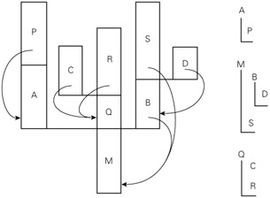

|
|
|
|
8.6 Coroutines
Given an understanding of the layout of the run-time stack,
we can now consider the implementation of more general control abstractions―coroutines
in particular. Like a continuation, a coroutine is represented by a closure (a
code address and a referencing environment), into which we can jump by means of
a nonlocal goto,
in this case a special operation known as transfer. The principal difference
between the two abstractions is that a continuation is a constant―it does not
change once created―while a coroutine changes every time it runs. When we goto a continuation, our old program counter is lost, unless we
explicitly create a new continuation to hold it. When we transfer from one
coroutine to another, our old program counter is saved: the coroutine we are
leaving is updated to reflect it. Thus, if we perform a goto into the same continuation multiple times, each jump will
start at precisely the same location, but if we perform a transfer into the
same coroutine multiple times, each jump will take up where the previous one
left off.
On the CD In effect, coroutines are execution contexts that
exist concurrently, but that execute one at a time, and that transfer control
to each other explicitly, by name. Coroutines can be used to implement
iterators (Section 6.5.3) and threads (to be discussed in Chapter 12). They are also useful in their own right,
particularly for certain kinds of servers, and for discrete event simulation.
Threads appear in a variety of languages, including Algol 68, Modula (1),
Modula-3, Ada, SR, Occam, Java, and C#. They are also commonly provided (though
with somewhat less attractive syntax and semantics) outside the language proper
by means of library packages. Coroutines are less common as a user-level
programming abstraction. Languages that provide them include Simula and
Modula-2. We focus in the following subsections on the implementation of
coroutines and (on the PLP CD) on their use in iterators (Section
8.6.3) and discrete event simulation (Section
8.6.4).
Example 8.54: Explicit
interleaving of concurrent computations
|
|
As a simple example of an application in which coroutines
might be useful, imagine that we are writing a "screen-saver"
program, which paints a mostly black picture on the screen of an inactive
workstation, and which keeps the picture moving, to avoid phosphor or
liquid-crystal "burn-in." Imagine also that our screen-server performs
"sanity checks" on the file system in the background, looking for
corrupted files. We could write our program as follows:
loop
--
update picture on screen
--
perform next sanity check
The problem with this approach is that successive sanity
checks (and to a lesser extent successive screen updates) are likely to depend
on each other. On most systems, the file-system checking code has a deeply
nested control structure containing many loops. To break it into pieces that
can be interleaved with the screen updates, the programmer must follow each
check with code that saves the state of the nested computation, and must
precede the following check with code that restores that state.
|
|
Example 8.55: Interleaving
coroutines
|
|
A much more attractive approach is to cast the operations as
coroutines:[6]
us, cfs : coroutine
coroutine check_file_system
--
initialize
detach
for all
files
…
transfer(us)
…
transfer(us)
…
transfer(us)
…
coroutine update_screen
--
initialize
detach
loop
…
transfer(cfs)
…
begin
-- main
us := new
update_screen
cfs := new
check_file_system
transfer(us)
The syntax here is based loosely on that of Simula. When
first created, a coroutine performs any necessary initialization operations,
and then detaches itself from the main program. The detach operation creates a
coroutine object to which control can later be transfered, and returns a
reference to this coroutine to the caller. The transfer operation saves the
current program counter in the current coroutine object and resumes the
coroutine specified as a parameter. The main body of the program plays the role
of an initial, default coroutine.
Design & Implementation
Threads and coroutines
As we shall see in Section 12.2.4, it is easy to build a simple thread
package given coroutines. Most programmers would agree, however, that threads
are substantially easier to use, because they eliminate the need for explicit
transfer operations. This contrast―a lot of extra functionality for a little
extra implementation complexity―probably explains why coroutines as an explicit
programming abstraction are relatively rare.
|
|
Calls to transfer from within the body of check_file_system
can occur at arbitrary places, including nested loops and conditionals. A
coroutine can also call subroutines, just as the main program can, and calls to
transfer may appear inside these routines. The context needed to perform the
"next" sanity check is captured by the program counter, together with
the local variables of check_file_system and any called routines, at the time
of the transfer.
As in Example
8.54, the programmer must specify when to stop checking the file system and
update the screen; coroutines make the job simpler by providing a transfer operation
that eliminates the need to save and restore state explicitly. To decide where
to place the calls to transfer, we must consider both performance and
correctness. For performance, we must avoid doing too much work between calls,
so that screen updates aren't too infrequent. For correctness, we must avoid
doing a transfer in the middle of any check that might be compromised by file
access in update_screen. Parallel threads (to be described in Chapter 12) would eliminate the first of these problems by
ensuring that the screen updater receives a share of the processor on a regular
basis, but would complicate the second problem: we should need to synchronize
the two routines explicitly if their references to files could interfere.
|
|
Because they are concurrent (i.e., simultaneously started
but not completed), coroutines cannot share a single stack: their subroutine
calls and returns, taken as a whole, do not occur in last-in-first-out order.
If each coroutine is declared at the outermost level of lexical nesting (as
required in Modula-2), then their stacks are entirely disjoint: the only objects
they share are global, and thus statically allocated. Most operating systems
make it easy to allocate one stack, and to increase its portion of the virtual
address space as necessary during execution. It is usually not easy to allocate
an arbitrary number of such stacks; space for coroutines is something of an
implementation challenge.
The simplest solution is to give each coroutine a fixed
amount of statically allocated stack space. This approach is adopted in
Modula-2, which requires the programmer to specify the size and location of the
stack when initializing a coroutine. It is a run-time error for the coroutine to
need additional space. Some Modula-2 implementations catch the overflow and
halt with an error message; others display abnormal behavior. If the coroutine
uses less space than it is given, the excess is simply wasted.
If stack frames are allocated from the heap, as they are in
most Lisp and Scheme implementations, then the problems of overflow and
internal fragmentation are avoided. At the same time, the overhead of each
subroutine call is significantly increased. An intermediate option is to
allocate the stack in large, fixed-size "chunks." At each call, the
subroutine calling sequence checks to see whether there is sufficient space in
the current chunk to hold the frame of the called routine. If not, another
chunk is allocated and the frame is put there instead. At each subroutine
return, the epilogue code checks to see whether the current frame is the last
one in its chunk. If so, the chunk is returned to a "free chunk"
pool.
In any of these implementations, subroutine calls can use
the ordinary central stack if the compiler is able to verify that they will not
perform a transfer before returning [Sco91].
|
|
If coroutines can be created at arbitrary levels of lexical
nesting (as they can in Simula), then two or more coroutines may be declared in
the same nonglobal scope, and must thus share access to objects in that scope.
To implement this sharing, the run-time system must employ a so-called cactus
stack (named for its resemblance to the Saguaro cacti of the American Southwest;
see Figure
8.6).

Figure 8.6: A cactus stack. Each branch to the side represents
the creation of a coroutine (A, B, C, and D). The static nesting of blocks is
shown at right. Static links are shown with arrows. Dynamic links are indicated
simply by vertical arrangement― each routine has called the one above it.
(Coroutine B, for example, was created by the main program, M. B in turn called
subroutine S and created coroutine D.)
Each branch off the stack contains the frames of a separate
coroutine. The dynamic chain of a given coroutine ends in the block in which
the coroutine began execution. The static chain of the coroutine,
however, extends down into the remainder of the cactus, through any lexically
surrounding blocks. In addition to the
coroutines of Simula, cactus stacks are needed for the threads of several
parallel languages, including Ada."Returning" from the main block of
a coroutine will generally terminate the program as a whole. Because a
coroutine only runs when specified as the target of a transfer, there is never
any need to terminate it explicitly. When a given coroutine is no longer
needed, the Modula-2 programmer can simply reuse its stack space. In Simula,
the space will be reclaimed via garbage collection when it is no longer
accessible.
Design & Implementation
Coroutine stacks
Many languages require coroutines or threads to be declared
at the outermost level of lexical nesting, to avoid the complexity of
noncontiguous stacks. Most thread libraries for sequential languages (the POSIX
standard pthread library among them) likewise require or at least permit the
use of contiguous stacks.
|
|
|
|
To transfer from one coroutine to another, the run-time
system must change the program counter (PC), the stack, and the contents of the
processor's registers. These changes are encapsulated in the transfer
operation: one coroutine calls transfer; a different one returns. Because the
change happens inside transfer, changing the PC from one coroutine to another
simply amounts to remembering the right return address: the old coroutine calls
transfer from one location in the program; the new coroutine returns to a
potentially different location. If transfer saves its return address in the
stack, then the PC will change automatically as a side effect of changing
stacks.
Example 8.57: Switching
coroutines
|
|
So how do we change stacks? The usual approach is simply to
change the stack pointer register, and to avoid using the frame pointer inside
of transfer itself. At the beginning of transfer we push the return address and
all of the other callee-saves registers onto the current stack. We then change
the sp, pop the (new) return address (ra) and other registers off the new
stack, and return:
transfer:
push all
registers other than sp (including ra)
*current
coroutine := sp
current coroutine
:= r1 --
argument passed to transfer
sp := *r1
pop all
registers other than sp (including ra)
return
|
|
The data structure that represents a coroutine or thread is
called a context block. In a simple coroutine package, the context block
contains a single value: the coroutine's sp as of its most recent transfer. (A
thread package generally places additional information in the context block,
such as an indication of priority, or pointers to link the thread onto various
scheduling queues. Some coroutine or thread packages choose to save registers
in the context block, rather than at the top of the stack; either approach
works fine.)
In Modula-2, the coroutine creation routine initializes the
coroutine's stack to look like the frame of transfer, with a return address and
register contents initialized to permit a "return" into the beginning
of the coroutine's code. The creation routine sets the sp value in the context
block to point into this artificial frame, and
returns a pointer to the context block. To begin execution of the coroutine,
some existing routine must transfer to it.
In Simula (and in the code in Example
8.55), the coroutine creation routine begins to execute the new coroutine
immediately, as if it were a subroutine. After the coroutine completes any
application-specific initialization, it performs a detach operation. Detach
sets up the coroutine stack to look like the frame of transfer, with a return
address that points to the following statement. It then allows the creation
routine to return to its own caller.
In all cases, transfer expects a pointer to a context block
as argument; by dereferencing the pointer it can find the sp of the next
coroutine to run. A global (static) variable, called current coroutine in the
code above, contains a pointer to the context block of the currently running
coroutine. This pointer allows transfer to find the location in which it should
save the old sp.
8.6.3 Implementation of Iterators
Given an implementation of coroutines, iterators are almost
trivial: one coroutine is used to represent the main program; a second is used
to represent the iterator. Additional coroutines may be needed if iterators
nest.
On the CD IN MORE DEPTH
Additional details appear on the PLP CD. As it turns out,
coroutines are overkill for iterator implementation. Most compilers use one of
two simpler alternatives. The first of these keeps all state in a single stack,
but sometimes executes in a frame other than the topmost. The second employs a
compile-time code transformation to replace true iterators, transparently, with
equivalent iterator objects.
8.6.4 Discrete Event Simulation
One of the most important applications of coroutines (and
the one for which Simula was designed and named) is discrete event
simulation. Simulation in general refers to any process in which we create
an abstract model of some real-world system, and then experiment with the model
in order to infer properties of the real-world system. Simulation is desirable
when experimentation with the real world would be complicated, dangerous,
expensive, or otherwise impractical. A discrete event simulation is one
in which the model is naturally expressed in terms of events (typically
interactions among various interesting objects) that happen at specific times.
Discrete event simulation is usually not appropriate for the continuous
processes, such as the growth of crystals or the flow of water over a surface,
unless these processes are captured at the level of individual particles.
On the PLP CD we consider a traffic simulation, in which
events model interactions among automobiles, intersections, and traffic lights.
We use a separate coroutine for each trip to be taken by car. At any given time
we run the coroutine with the earliest expected arrival time at an upcoming
intersection. We keep inactive coroutines in a priority queue ordered by those
arrival times.
[6]Threads could also be used in this example, and might in
fact serve our needs a bit better. Coroutines suffice because there is a small
number of execution contexts (namely two), and because it is easy to identify
points at which one should transfer to the other.